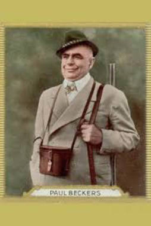
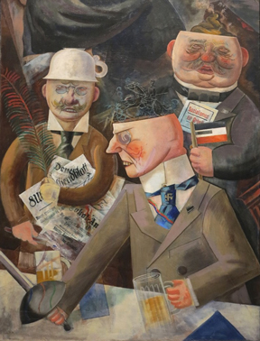

Pillars of Society
Heinrich George
Albrecht Schoenhals
Hansjoachim Büttner
Paul Beckers
Maria Hofen
Fritz Draeger (uncredited)
Franz Stein (uncredited)
Lewis Brody (uncredited)
SYNOPSIS
The prosperity and career of a Norwegian ship builder who has founded the town's hospital are revealed by an innocent wanderer to have been based on deceit and corruption.
Made in Hitlerian Germany, Stützen der Gesellschaft is an uncompromising put down of the bourgeoisie. A wealthy father, an abominable man, treats his brother-in-law like a scapegoat and intends to marry his illegitimate daughter, the Cinderella of the house, to a less-than-handsome rich man. His wife is a hateful creature who despises her brother. So when the man of the circus comes to town, it is only natural that the son and him (and the illegitimate daughter) hook up together. A storm (impressive for the time) becomes a transparent metaphor for the wreck of those so-called values which do not even respect the human being (the fishermen's plight).
The film was based on the eponymous play by Henrik Ibsen. It was shot at the Babelsberg Studios in Berlin and on location in Hamburg, Potsdam and the Danish island of Bornholm.
Filming took place in September and October 1935. Sets were designed by the art directors Otto Guelstorff and Hans Minzloff. Fred Lyssa held the production and manufacturing line.
The film was premiered in Berlin on 21 December 1935 in Germany. In the US, he had his premiere about a year later, on November 6, 1936. The film also appeared in France under the title Les Piliers de la Société, in Italy under the title Le Colonne della Società and in Portugal under title Pilares Sociedade.

